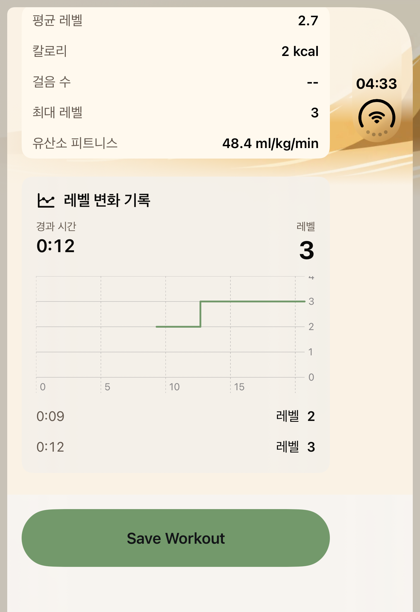
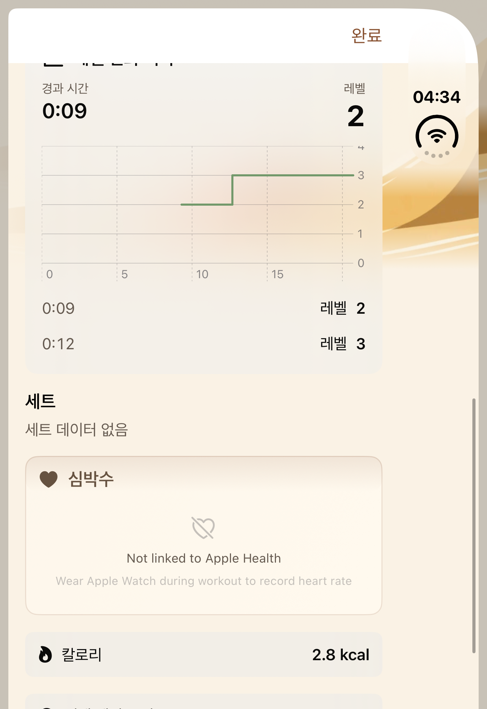
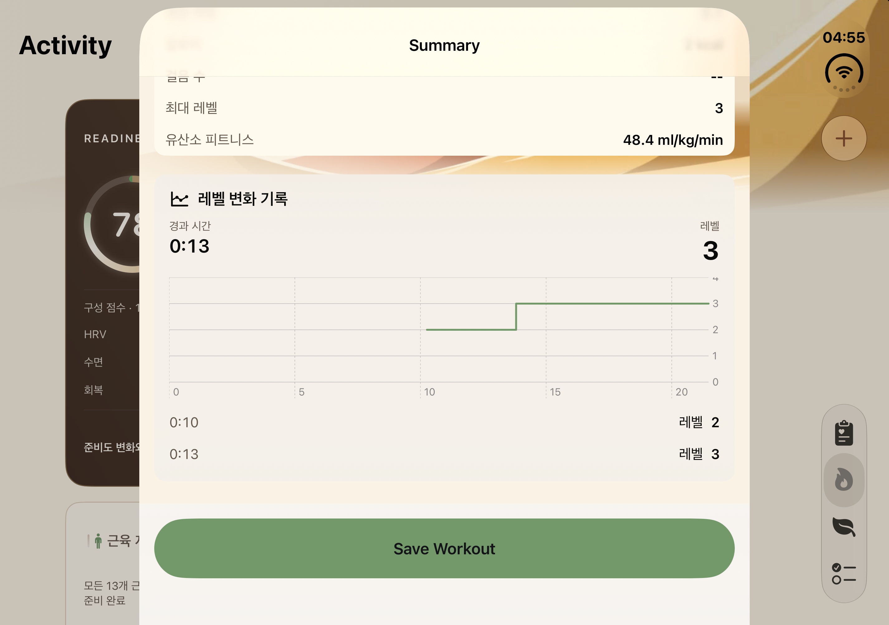
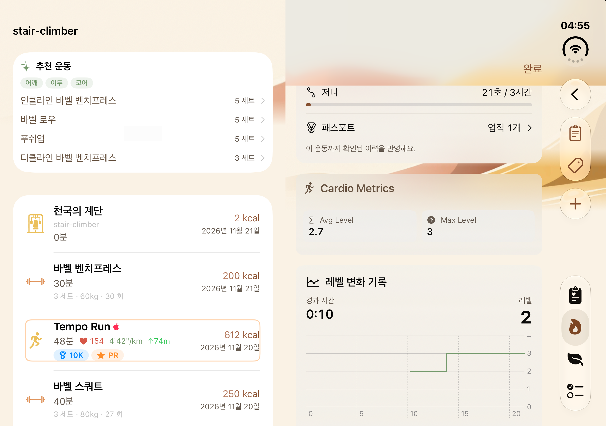
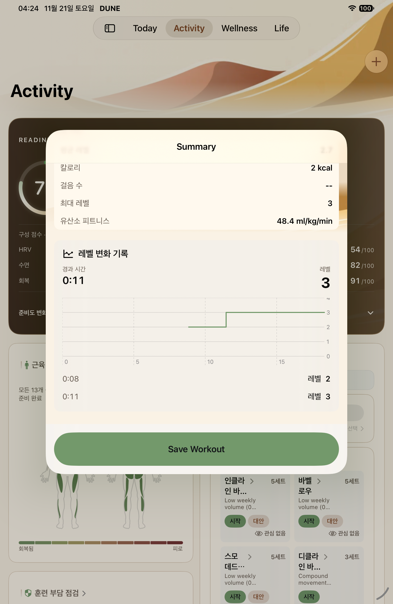
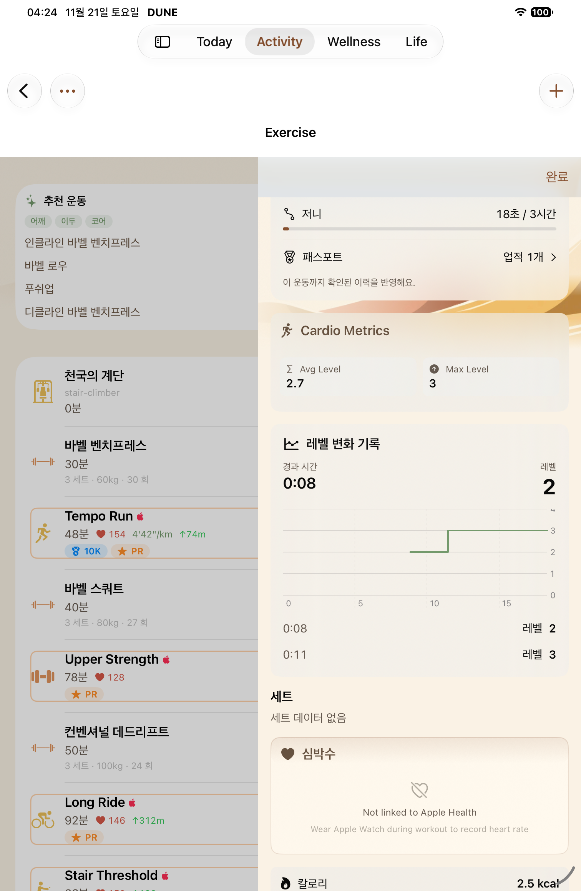
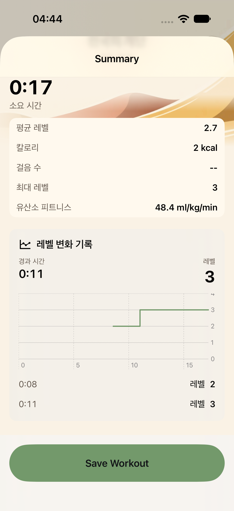
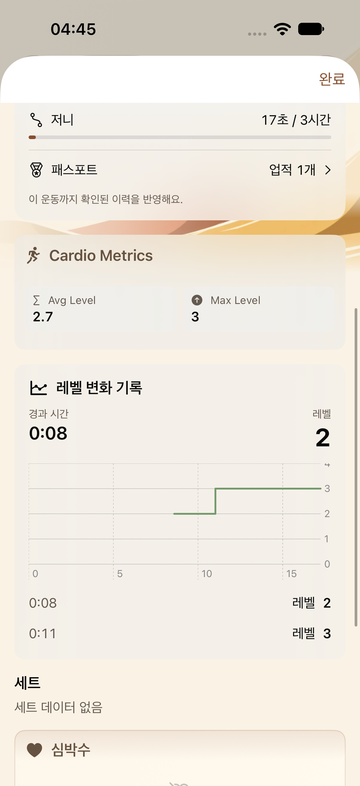

전체 디자인맵
R12 · W25, W27
기능별 원격 소스와 최종 통합본을 파일 단위로 대조했다. 각 이미지를 통과한 개별 UI 테스트에 연결했다. Duo 내부 화면은 지정된 체크포인트에서 활성 LCD-1 프레임버퍼를 직접 캡처했다. 파일별 빌드·크기·관찰 결과는 아래 기록에 있다. source 95481eed6980e593252656bcd47ada549178285f; build dfea466897aefd82e290e29b81531b027a2b2258,0a266b6ad3dedb4b8cb2e990f9e27cb77a54a871,112f1d6e8b8627579efe5fa334735ff84c4f01d1.

duo · R12-screen · 1398×2034
Duo 접힘 W25 요약 PNG에서 선택 시간 0:12·레벨 3, 레벨 2→3 계단 그래프와 0:09/0:12 두 행이 모두 읽힌다. 차트 카드와 Save Workout 버튼 전체가 외부 화면에 들어오며 겹침은 보이지 않는다. 위쪽 보조 통계 일부는 스크롤 위에 있어 전체 요약을 이 한 장으로 검증하지 않는다.

duo · W27-stair-level-history-saved-detail · 1398×2034
Duo 접힘 W27 저장 상세 PNG에서 선택 시간 0:09·레벨 2, 종료까지 이어지는 레벨 3 구간, 두 변경 행이 읽힌다. 카드 제목 일부는 상단 고정 바에 가려져 이 프레임은 차트와 기록 행을 검증하며 전체 상세 헤더 배치는 검증하지 않는다.

duo-open · R12-screen · 2853×2007
Duo 내부 화면에서 완료 요약은 0:13·레벨 3과 저장 버튼을 보여 준다. 저장 후에는 운동 목록 옆 상세에 레벨 2→3 그래프가 보인다.

duo-open · W27-stair-level-history-saved-detail · 2853×2007
Duo 내부 화면에서 완료 요약은 0:13·레벨 3과 저장 버튼을 보여 준다. 저장 후에는 운동 목록 옆 상세에 레벨 2→3 그래프가 보인다.

ipad · R12-screen · 1512×2316
iPad W25 계단 운동 완료 요약의 레벨 이력 카드에서 선택 시각 0:11·레벨 3이 그래프 위에 보인다. 그래프는 0:08 레벨 2에서 0:11 레벨 3으로 계단식 변경 후 종료까지 유지되며 아래에 두 변경 행이 모두 표시된다. Save Workout 전체 버튼도 보인다.

ipad · W27-stair-level-history-saved-detail · 1512×2316
iPad W27 저장 후 Exercise 상세의 레벨 이력 카드에서 선택 시각 0:08·레벨 2, 계단식 레벨 2→3 그래프, 0:08/0:11 두 변경 행이 함께 보인다. 저장된 기록에서도 기구 레벨 이력이 유지되며 이 캡처는 다른 운동 길이나 단일 변경 상태는 검증하지 않는다.

regular · R12-screen · 1206×2622
운동 종료 화면에서 선택된 0:11·레벨 3과 하단 저장 버튼이 보인다. 저장한 운동 상세에서도 0:08·레벨 2에서 시작해 다음 레벨 3까지 이어지는 두 구간이 보인다.

regular · W27-stair-level-history-saved-detail · 1206×2622
운동 종료 화면에서 선택된 0:11·레벨 3과 하단 저장 버튼이 보인다. 저장한 운동 상세에서도 0:08·레벨 2에서 시작해 다음 레벨 3까지 이어지는 두 구간이 보인다.미검증 기기: none by device. 미검증 화면: none by screen ID. 육안 검토: 원본 화면 검토 완료; Duo 접힘 W25 요약 PNG에서 선택 시간 0:12·레벨 3, 레벨 2→3 계단 그래프와 0:09/0:12 두 행이 모두 읽힌다. 차트 카드와 Save Workout 버튼 전체가 외부 화면에 들어오며 겹침은 보이지 않는다. 위쪽 보조 통계 일부는 스크롤 위에 있어 전체 요약을 이 한 장으로 검증하지 않는다. Duo 접힘 W27 저장 상세 PNG에서 선택 시간 0:09·레벨 2, 종료까지 이어지는 레벨 3 구간, 두 변경 행이 읽힌다. 카드 제목 일부는 상단 고정 바에 가려져 이 프레임은 차트와 기록 행을 검증하며 전체 상세 헤더 배치는 검증하지 않는다. Duo 내부 화면에서 완료 요약은 0:13·레벨 3과 저장 버튼을 보여 준다. 저장 후에는 운동 목록 옆 상세에 레벨 2→3 그래프가 보인다. iPad W25 계단 운동 완료 요약의 레벨 이력 카드에서 선택 시각 0:11·레벨 3이 그래프 위에 보인다. 그래프는 0:08 레벨 2에서 0:11 레벨 3으로 계단식 변경 후 종료까지 유지되며 아래에 두 변경 행이 모두 표시된다. Save Workout 전체 버튼도 보인다. iPad W27 저장 후 Exercise 상세의 레벨 이력 카드에서 선택 시각 0:08·레벨 2, 계단식 레벨 2→3 그래프, 0:08/0:11 두 변경 행이 함께 보인다. 저장된 기록에서도 기구 레벨 이력이 유지되며 이 캡처는 다른 운동 길이나 단일 변경 상태는 검증하지 않는다. 운동 종료 화면에서 선택된 0:11·레벨 3과 하단 저장 버튼이 보인다. 저장한 운동 상세에서도 0:08·레벨 2에서 시작해 다음 레벨 3까지 이어지는 두 구간이 보인다.; 기능별 캡처 검토.
원본 파일명·SHA-256·크기·테스트 출처